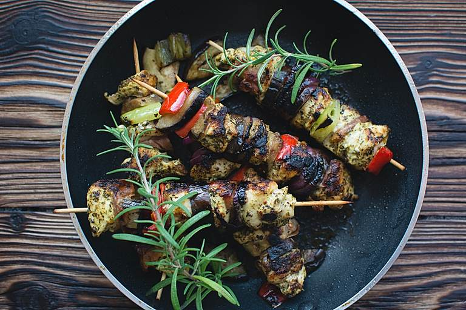

Kebab (also American kabob) is a term in English for several types of food. The word originated in Middle East and is also common in other languages worldwide, with numerous spellings and variants. It has different definitions in different varieties of English, and in different cultures.
In contemporary American and British English, a kebab is a common dish, consisting of a skewer with small pieces of meat or seafood, together with vegetables such as onions, tomatoes, and bell peppers. Also known as shish kebab or sometimes shashlik, kebabs are customarily prepared in homes and restaurants, and are usually cooked on a grill or barbeque. The word kebab may also be used as a general term in English to describe any similar-looking skewered food, such as brochette, satay, souvlaki, yakitori, or numerous small chunks of any type of food served on a stick. This is different from its use in the Middle East, where shish (Turkish: şiş) is the word for skewer, while kebab comes from the Persian word for grilling.
In the UK, Ireland, Australia, and some other English-speaking countries outside of North America, the word kebab is also used generally to mean döner kebab, or the related shawarma or gyros, or sandwiches made with them, available from kebab shops as fast food and take-away meals. Many layers of meat are stacked onto a large vertical rotating spit; the outer surface is gradually cooked and sliced off, and typically served as a sandwich in pita or flatbread with salad and sauces. In Germany, the highly popular sandwich, introduced by Turkish immigrants, is called a döner, though Arab shops serve shawarma. In other countries in Europe and worldwide, the name used depends on the dish and on local customs.
In Indian English and in the languages and cuisine of the Middle East and the Muslim world, kebab is a broad term covering a wide variety of grilled meat dishes in addition to the shish kebab and döner kebab familiar in the West. Although often cooked on a skewer, many types of kebab are not. Kebab dishes can consist of cut up or ground meat or seafood, sometimes with vegetables; cooked on a skewer over a fire, or like a hamburger on a grill, baked in a pan in an oven, or as a stew; and served with various accompaniments according to each recipe.
The traditional meat for kebab is lamb, but depending on local tastes and religious prohibitions, other meats may include beef, goat, chicken, fish, or, more rarely, pork.